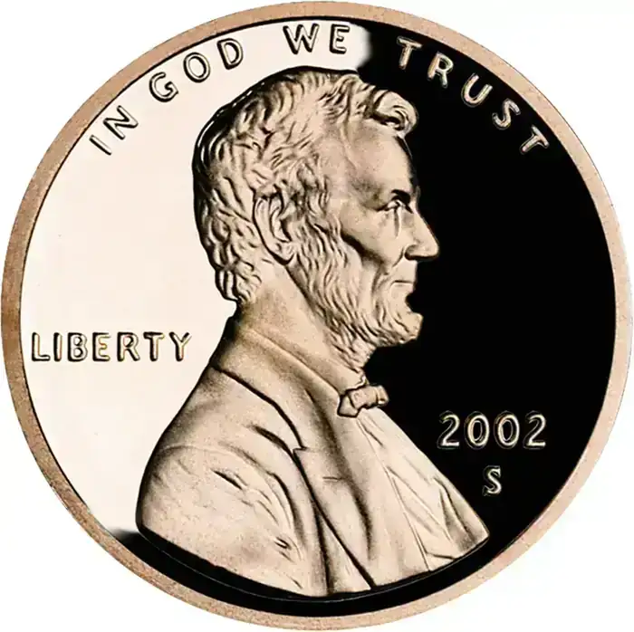

The monetary case
Bitcoin's supply is capped at 21 million coins on a published schedule enforced by the network's rules rather than by a central bank. That is a genuine and unusual property: no committee can decide to issue more.
Maps, diagrams and images


It is also bearer and permissionless — holding it requires no account with an institution, and transferring it requires no approval. For people in countries with capital controls or with currencies that have collapsed, that has been used concretely: Nigeria's and Argentina's peer-to-peer volumes rose sharply during periods of currency stress and restrictions.
The 'digital gold' claim rests on these properties plus hardness: gold's supply grows slowly too, and both are held as a hedge rather than used for daily transactions.
The case against
Volatility. Gold's price moves by tens of per cent over years; bitcoin's has moved by that much in weeks. A store of value that can halve is a poor unit of account, which is why almost nothing is priced in it.
No cash flows. An asset with no yield has no valuation anchor. That does not make it worthless, but it means its price is entirely a matter of what the next buyer will pay — the definition of a speculative asset.
Energy and concentration. Proof-of-work mining consumes electricity on the scale of a mid-sized country, and mining and ownership are both concentrated: a small number of pools produce most blocks and a small number of addresses hold a large share of the supply.
The cash claim failed. As a payment system it is slow and expensive relative to cards and instant transfers, and layers built on top have not displaced them. The BIS was blunt about this in 2018 and little has changed.
Documented: the supply cap, the permissionless transfer, the use as a hedge against currency controls, and the 2024 approval of spot exchange-traded funds in the United States, which brought it inside mainstream brokerage accounts.
Contested: whether it is a store of value at all over long horizons, what it is worth, and whether its energy use is defensible.
Wrong on both extremes: 'it is a fraud with no use' ignores the capital-control use case, and 'it is the future of money' ignores that fifteen years in it is still not used as money.
The archive labels this live debate: the properties are real, and the valuation question has no agreed answer.
Why it is in the archive
Because it is the clearest example of a technology whose original claim and actual use diverged, and because both the maximalist and the dismissal versions are widely repeated and easy to check.
Related: FTX, scarcity or ingenuity.
Sources for this page
- Wikipedia, “Bitcoin” — design, supply, adoption, criticismen.wikipedia.org
- Nakamoto (2008), the bitcoin white paperbitcoin.org
- Bank for International Settlements (2018), “Cryptocurrencies: looking beyond the hype”www.bis.org
- Cambridge Centre for Alternative Finance, bitcoin electricity consumption indexccaf.io
Open resources on this topic
- PapersOpen-access articles: DOAJ · PubMed Central · Internet Archive Scholar
- BooksPublic-domain and borrowable copies: Open Library · Project Gutenberg · Google Books · Internet Archive
Cite this page
Momin, S. (2026). Bitcoin as Digital Gold. The Larger World Archive. https://drsamonline.github.io/LARGE_GLOBE/bitcoin-digital-gold.htmlMomin, Sohil. “Bitcoin as Digital Gold.” The Larger World Archive, 2026, https://drsamonline.github.io/LARGE_GLOBE/bitcoin-digital-gold.html.Momin, Sohil. “Bitcoin as Digital Gold.” The Larger World Archive, 2026. https://drsamonline.github.io/LARGE_GLOBE/bitcoin-digital-gold.html.@misc{bitcoin2026bitcoin,
author = {Momin, Sohil},
title = {Bitcoin as Digital Gold},
year = {2026},
howpublished = {The Larger World Archive},
url = {https://drsamonline.github.io/LARGE_GLOBE/bitcoin-digital-gold.html},
note = {Last reviewed 20 November 2026}
}Last reviewed 20 November 2026 · Corrections policy · this page is not peer reviewed